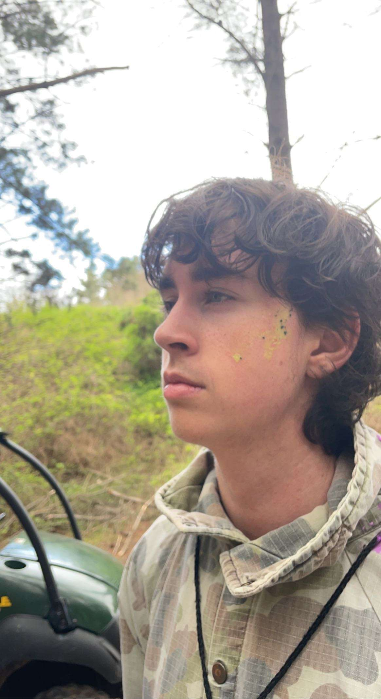

About Me
Hi, I'm Andrew. I am 18, from Canberra, and am studing a Bachelor of Science with a focus in Computer Science. I like playing sports such as Soccer, Rock Climbing, and Tennis, and enjoy making websites and videos on my PC. I live off campus and am Australian.
My Passion
My passion in particular is Football/Soccer. My favourite team is Borrusia Dortmund, a German team who plays in the Bundesliga (German football league). I've supported them since I was a little kid, so I thought it would be a great topic for which to make a website about.

About This Site / Reflection
I've made sites in the past but none anywhere near the size and scope of this one. This assignment provided an opportunity to delve more into the realms of CSS, HTML, and JavaScript, which I really appriciated as I wasn't the best at it before. Throughout the development process, I encountered challenges, learned valuable lessons, and ultimately gained a deeper appreciation for the complexities of web design.
The countless moving parts of CSS and HTML would constantly stump me up on the most mundande of tasks; such as centering a div, and making sure the website is resizable. But once I conquered those hurdles I encountered came the fun part: being creative!
CSS would be a pivotal tool in shaping the visual aesthetic of the site, HTML serving as the foundation of where elements are located, and JavaScript adding some flair to an already attractive site. I made sure that aestheics and conventions are followed well to make the user experience as easy to use as possible. For example; by following the team colours of yellow and black, or positioning elements with properly centered labels and padding.
Overall, creating a personal website was a fulfilling experience! I learnt a ton about shaping the visual aesthetics, structure, and interactivity of the site. Through trial and error, I gained valuable insights into the intricacies of web design, and the challenges I encountered helped me grow as a developer. I am proud of the final product and the skills I acquired along the way, and I look forward to applying these lessons to future development endeavors.